Windsurfing handbook · Part 1 of 3
Before you sail
Start with the club, check its rules, and prepare for your session from signout to return.
Open a section to read or practice a topic.
Getting started at CSCJoin, arrange lessons, and follow the handbook in a practical order.
Welcome to windsurfing at Cal Sailing Club. Use this handbook alongside your lessons and on-water practice.
Join and arrange a lesson
Start with Membership for joining information. The Windsurfing lessons page explains the club’s lesson program; use Lesson registration when you are ready to book. Registration requires you to log in.
Take part in the club
CSC runs through volunteer contributions, including teaching, maintenance, and administration. See Volunteering opportunities for ways to participate.
Find your way through the handbook
Work through Before you sail to understand the club’s procedures and prepare for a session. Sailing skills pairs the handbook’s illustrations with links to the existing 10-Step Guide. Use Equipment & reference to check gear or look up a term.
Club rules and proceduresFind the existing club rules, rating requirements, sailing areas, and opening times.
The club keeps its rules, rating requirements, and sailing boundaries on the pages below. Use these resources when planning your session, and follow the Day Leader’s instructions at the club.
Club rules and conduct
Read the Operating Rules for the club’s sailing requirements and procedures, and the Code of Conduct for expectations of members’ behavior.
Ratings, equipment, and sailing areas
Check Windsurfing ratings and tests for your rating’s requirements and equipment privileges. Use Sailing areas and boundaries to identify where you may sail, and the Windsurfing fleet page to learn about the equipment.
Plan your session
Check Club opening and closing times, then confirm the session’s restrictions and return time with the Day Leader before going out.
Safety and asking for helpPrepare for the conditions and know how to ask for assistance.
Prepare for the conditions
Use the CSC Operating Rules to check flotation and other safety requirements. The 10-Step Guide’s Safety lesson covers cold-water preparation and general safety equipment.
Know how to ask for help
Before going out, ask the Day Leader how to call for assistance and what recovery arrangements apply that day. Review Self-rescue and getting back with your instructor.
Checking equipment out and back inChoose your equipment, sign out by tablet or phone, and complete your return.
Sign out your equipment before going on the water, and complete the return as soon as you are back ashore. You can use a clubhouse tablet or your own phone.
1. Choose and check your equipment
Select your board and sail, and note the ID on each one. If you plan to use a clubhouse tablet, remember the IDs or take a photo of them before leaving the yard. With your phone, you can sign out while you are still beside the equipment.
You are responsible for all equipment you sign out. If you take over a sail that someone else has already rigged, check it for damage and make sure it is rigged correctly before taking it out.

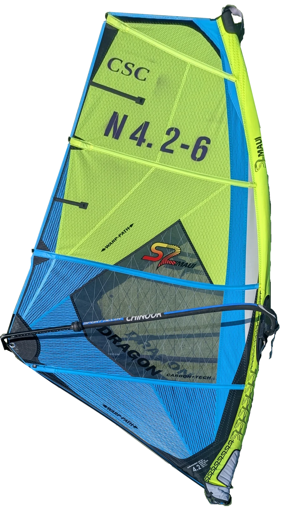

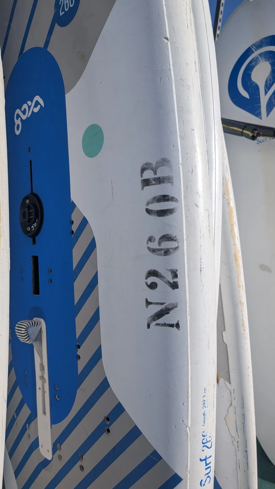
Tap or click any photo to see it at full size.
2. Sign out before you sail
Using a clubhouse tablet
-
Select Windsurf Signout on the tablet’s Equipment Signout screen.
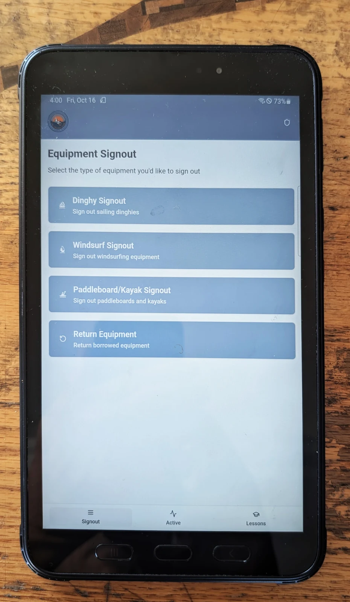
Choose Windsurf Signout. -
Enter your Member ID, then select or enter the Board ID and Sail ID.
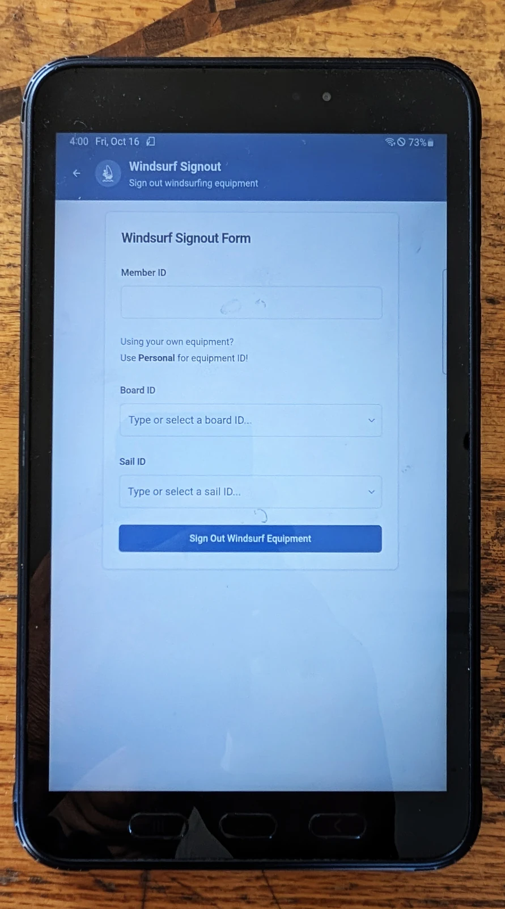
Use your own member ID and the IDs on your selected equipment. -
Check the details, then press Sign Out Windsurf Equipment to finish.
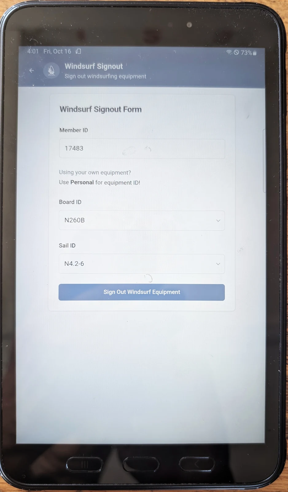
Submit the form before taking the equipment out.


Using your phone
You must be at the club, logged in, and have location access enabled to sign out equipment on your phone. Allow the site to use your location when prompted.
-
On the CSC website, open the menu and choose Resources → Signout.
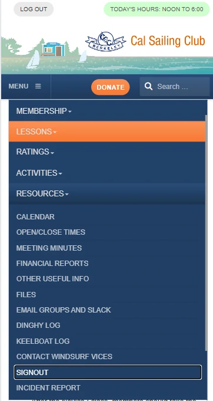
Find Signout under Resources. -
If the Equipment Management System asks you to sign in, enter your username and password and press Sign In.
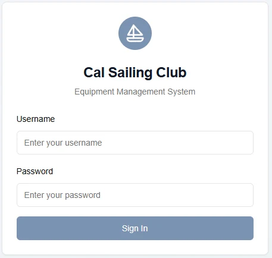
Sign in to reach the equipment screens.


Once you are in, follow the same tablet steps above: choose Windsurf Signout, enter your member and equipment IDs, and press Sign Out Windsurf Equipment.
For quicker access next time, add the signout page to your phone’s home screen using your browser’s Install or Add to Home Screen option.
3. Return the equipment and sign back in
Always complete the return when you come ashore. This is your sign-in: it lets the Day Leader know you have returned safely and are no longer out on the water.
-
On a clubhouse tablet or your phone, choose Return Equipment. Enter your Member ID and press Return Equipment.
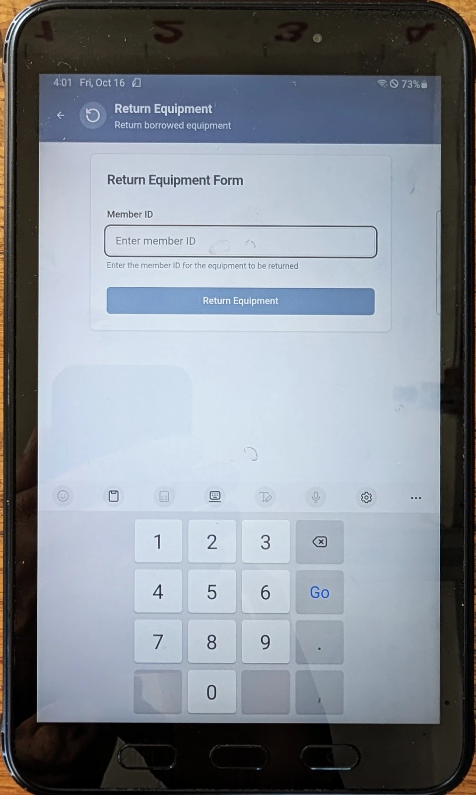
Start the return with your member ID. -
Report any damage or problems using Report Issues. If there is no damage or issue to report, press No Damage - Complete Return.
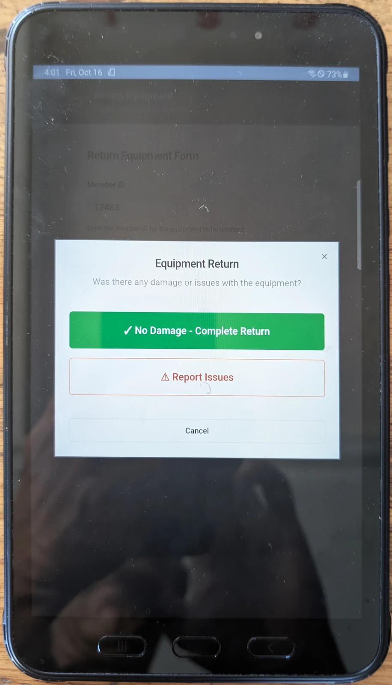
Report problems before completing the return.


Finally, check the Active Equipment Signouts monitor in the clubhouse. Make sure your name has disappeared from the active windsurf signouts. If it is still listed, check that your return went through and ask the Day Leader for help if needed.

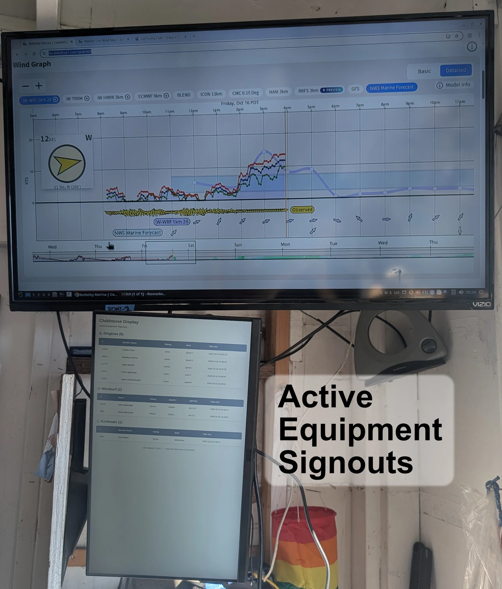
Equipment use
The club has an ample stock of equipment, so there is no time limit on equipment use. Check the session's hours and restrictions in Club rules and procedures.
Launching and landingHandle the board and rig at the dock, from launch to return.
Dock handling review pending. Confirm the day’s dock instructions with the Day Leader and see Windsurfing ratings and tests for current dock-handling requirements.
Preparing to launch
After checking out your equipment and changing into your wet suit, first carry your board and place it on the windward side of the dock, fin over the edge. Then get your sail. Always launch and return to the downwind side of the dock (same side as the sailboats are tied up on). Never launch from the upwind side of the dock. Never leave your sail on the dock unattended, even for a few minutes. It is courteous to try to leave the end of the dock for short board sailors.
Returning to the dock
Return to the downwind side of the dock. Pull your board and rig on the dock. Move the board over to the upwindside of the dock. Return your sail to the sail locker. Rinse it off if it’s muddy. Do not leave a sail unattended by the hose (near the boat hoist).
Inspect your equipment after use and complete the equipment return and sign-in.

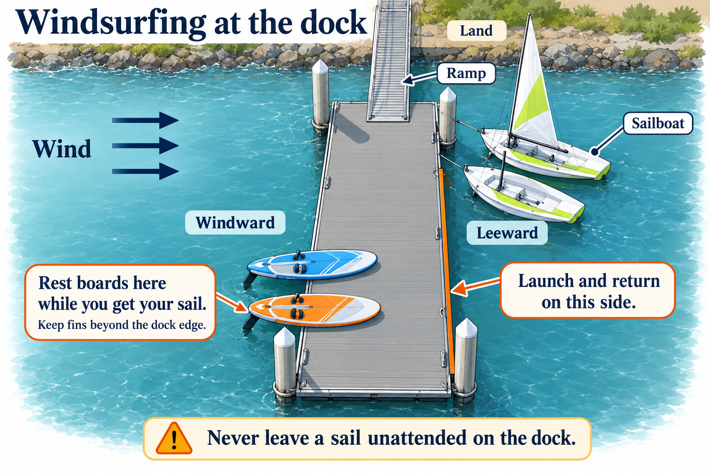
Self-rescue and getting backFind practice guidance and check current local recovery arrangements.
Practice before you need it
Use the self-rescue strategies in the 10-Step Guide’s Safety lesson to prepare for practice with your instructor. Ask the Day Leader about recovery arrangements for your session and check the current Sailing Areas before going out.
Local landmarks from the 2009 handbook
Historical guidance; club review pending. The handbook described paddling to the third dock and carrying the equipment back. If the dock was out of reach, it identified the adjacent shore or the Marina access road as possible landings. It warned that sailors in trouble near the east-end rocks by the frontage road were hard to see. Confirm today’s usable recovery sites with the Day Leader.
Historical recovery reference
Club review pending. The handbook noted that a lowered centerboard could help with tracking while paddling. It also described a long-distance method in which the rig was detached, positioned over the back of the board with part of the boom below the board beside the fin, and secured to the universal with the extra downhaul line. Review equipment-specific recovery methods with your instructor before trying them.
Before-you-sail checklistReview the six preparation topics before going on the water.
Use this recap to check your preparation before going on the water. Return to any section you need to review, and ask your instructor or the Day Leader about anything that is unclear.
- Get ready to participate. Check your membership and lesson arrangements in Getting started at CSC.
- Know the club’s requirements. Review Club rules and procedures for the maintained rules, rating requirements, equipment privileges, sailing areas, and opening times. Confirm the session’s restrictions and return time with the Day Leader.
- Prepare for the conditions. Review Safety and asking for help, check the safety equipment you need, and know how to request assistance.
- Check and sign out your equipment. Follow Checking equipment out and back in, and know how to complete the return and report damage when you come ashore.
- Plan your launch and landing. Review Launching and landing so you know how to handle your board and rig at the dock.
- Be ready to get back. Use Self-rescue and getting back to review recovery instruction and identify what to practice with your instructor.
This is a preparation checklist. Use the club’s ratings page, linked from Club rules and procedures, for current test requirements.
Based on the CSC handbook revised April 2009. The 10-Step Guide is by Bill Prinzmetal; the source’s 2007 revision credits photographs by Rob Weinberg. Original artwork is retained during the 2026 review.